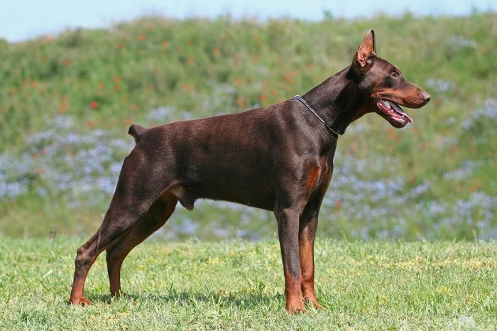

Louis Dobermann (1834-1894), sống ở vùng Apolda, nước Đức, được coi là người đã sáng tạo ra giống chó này, nhưng thực ra, một người bạn của ông, Otto Goeller mới là người đặt tên cho giống này. Goeller đã theo dõi một cách hào hứng những công việc lai tạo giống do Dobermann tiến hành trong một thời gian dài. Sau đó chính Goeller là người đã tiến hành công việc chọn lọc nâng cao chất lượng cho giống chó, bằng cách cho lai tạo từ rất nhiều con chó giống khác nhau mà Louis Dobermann đang có (bao gồm cả chó lai, chó terrier, và các giống chó chăn gia súc), để tạo ra giống chó mà ngày nay chúng ta biết đến với tên gọi Doberman Pinscher.
Louis Dobermann và Otto Goeller không ghi chép lại cách thức, tỷ lệ mà họ áp dụng khi gây giống chó mới, vì thế, không ai biết đích xác Doberman đã được tạo ra như thế nào. Nhưng hiện nay nhiều chuyên gia cùng đồng ý rằng Doberman Pinscher là hậu duệ của các giống chó sau: Rottweiler, German Pinscher, Manchester Terriers, German Short Haired Pointer, và thậm chí cả Great Dane hoặc GSD cũng có thể đóng góp một phần nào đó trong việc tạo ra Doberman.
Khi nhắc đến Dobermann, đa số mọi người nghĩ đến một con Dobermann màu đen với các viền nâu vàng. Thực tế, Dobermann có 2 gene màu khác nhau (giả sử gene A và B) tương tác để có thể tạo ra bốn loại kiểu hình về màu sắc khác nhau. Con Dobermann với màu truyền thống đen hoặc đen và vàng là do chúng mang allele trội của cả hai gene (A - B -). Một loại biến chủng thường thấy ở Dobermann có bộ lông màu đỏ hay đỏ và vàng là do chúng đồng hợp lặn về 1 gene (vd. A - bb). Đó là cách gọi ở Mỹ còn ở các nơi khác, những con Dobermann như vậy được gọi là màu nâu vì bộ lông phủ toàn màu nâu đỏ sẫm với những viền vàng. Tuy nhiên, đối với những con Dobermann đồng hợp lặn ở gene màu kia (aa B-) thì có màu lông xanh xám. Một con Dobermann có tổ hợp gene đồng hợp lặn ở cả hai gene (aa bb), rất hiếm gặp trong tự nhiên, thì có màu vàng sáng và được gọi với cái tên là "isabella".
Được lai tạo hàng thế kỷ để trở thành loài chó canh gác, Doberman có được các phẩm chất lý tưởng cho công việc này: Nhậy cảm, nhiệt huyết, có sức mạnh và sự bền bỉ phi thường. Hơn thế nữa, đây là một trong những giống chó vô cùng thông minh và dễ dạy bảo. Quyết đoán, không hề biết sợ hãi nhưng không hoang dã, trung thành, tận tuỵ và tình cảm với gia đình chủ, chó Doberman gần như trở thành một thành viên chính thức của gia đình.Vì Doberman rất thông minh, dễ dạy bảo, có khả năng tấn công, bảo vệ rất tốt nên trong thực tế chúng thường được huấn luyện để phục vụ nhiều mục đích khác nhau (trong đó có cả mục đích xấu).
